Getting started
CausalTargeted estimates LMTP and related interventional targets once CausalDynamics.jl has supplied a graph and adjustment set. The walk-throughs below run end to end in Documenter (synthetic data, small folds) so you can copy the pattern onto cohort tables.
Install from General, or develop a local clone:
using Pkg
Pkg.add("CausalTargeted") # resolves CausalDynamics from General
# Pkg.develop(path="<path-to-local-clone>") # e.g. after git cloneLoad plotting backends when you want figures:
using CausalTargeted, CausalDynamics, Graphs, DAGMakie, CairoMakieMediation examples additionally need using CausalMediation.
Each walk-through below plots DAGs in the style of Cinelli, Forney & Pearl (2022, SMR): a good-control triangle (dagplot_confounding) for total-effect identification, a full mediation DAG (with M on causal paths) for mediation identification, then the estimand path (dagplot_chain or dagplot_mediation) with structural_edge_labels on edges where needed. Custom dagplot layouts use edge_routing / CurvedEdge on skip chords (see CausalMediation Getting started).
1. Identify, then estimate a δ-grid (LMTP)
Graph. Baseline confounding of a continuous exposure (W → A → Y, W → Y).
using CausalTargeted, CausalDynamics, Graphs, StableRNGs
g = DiGraph(3)
add_edge!(g, 1, 2) # W → A
add_edge!(g, 1, 3) # W → Y
add_edge!(g, 2, 3) # A → Y
names = Dict(1 => :W, 2 => :A, 3 => :Y)
id = identify(g, TotalEffectQuery(:A, :Y); node_names = names)
id.identifiable, id.adjustment, id.strategy(true, [:W], :backdoor)Graph (identification). Good-control triangle: W is adjusted; paths carry no estimates.
using DAGMakie, CairoMakie
fig, _, _ = dagplot_confounding(["W", "A", "Y"];
color_by = :adjustment,
exposure = 2,
outcome = 3,
adjustment = Set([1]), # good control W (Cinelli et al. 2022)
title = "Good control W (identification)",
)
fig
Data and defaults. recommend_run_options picks folds and learners for the sample size; pass the kwargs into run_lmtp_grid.
df, truth = simulate_linear_mtp(200; rng = StableRNG(1))
opts = recommend_run_options(size(df, 1); engine = :lmtp)
δ = collect(-1.0:0.25:1.0) # z-scale grid; default_deltas() uses -2:0.1:2
grid = run_lmtp_grid(
df, :A, :Y;
baseline = [:W],
deltas = δ,
folds = opts.folds,
learners_outcome = opts.learners_outcome,
learners_trt = opts.learners_trt,
parallel = false,
positivity = opts.positivity,
simultaneous = false,
rng = StableRNG(2),
)
grid[:, [:delta, :est, :se]]| Row | delta | est | se |
|---|---|---|---|
| Float64 | Float64 | Float64 | |
| 1 | -1.0 | -0.374614 | 0.0761151 |
| 2 | -0.75 | -0.288654 | 0.0638243 |
| 3 | -0.5 | -0.215521 | 0.0406115 |
| 4 | -0.25 | -0.10565 | 0.0222537 |
| 5 | 0.0 | 0.0 | 0.0 |
| 6 | 0.25 | 0.1437 | 0.020497 |
| 7 | 0.5 | 0.264806 | 0.0322536 |
| 8 | 0.75 | 0.373311 | 0.0450405 |
| 9 | 1.0 | 0.457655 | 0.0556824 |
Certificate. Attach identification provenance before archiving results:
estimand = estimand_from_query(TotalEffectQuery(:A, :Y), [:W])
cert = identification_certificate(id, :A, :Y; adjustment = [:W])
meta = build_run_metadata(estimand, cert; folds = 2)
meta.certificate.result.identifiabletrueGraph (total effect). Estimand path A → Y only (confounder omitted from the TE diagram).
using Graphs: edges, src, dst
δ_show = 0.5
te = only(grid[abs.(grid.delta .- δ_show) .< 1e-8, :est])
g_te, _ = chain_graph(["A", "Y"])
fig, _, _ = dagplot_chain(["A", "Y"];
elabels = structural_edge_labels(g_te, ["TE\n$(round(te; digits = 2))"]),
elabels_fontsize = 13,
elabels_distance = 14,
elabels_rotation = 0,
title = "Total effect (δ = $δ_show)",
)
fig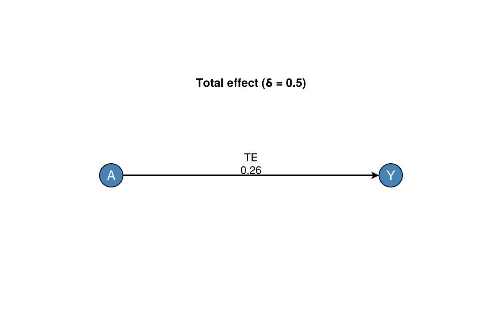
Figure. MTP curve with optional uncertainty band (plot_mtp_curve needs CairoMakie):
using CausalTargeted, CairoMakie, StableRNGs
df, _ = simulate_linear_mtp(200; rng = StableRNG(3))
δ = collect(-1.0:0.2:1.0)
grid = run_lmtp_grid(
df, :A, :Y;
baseline = [:W], deltas = δ,
folds = 2, parallel = false, simultaneous = false, rng = StableRNG(4),
)
fig, ax = plot_mtp_curve(grid; title = "LMTP δ-grid (synthetic)")
fig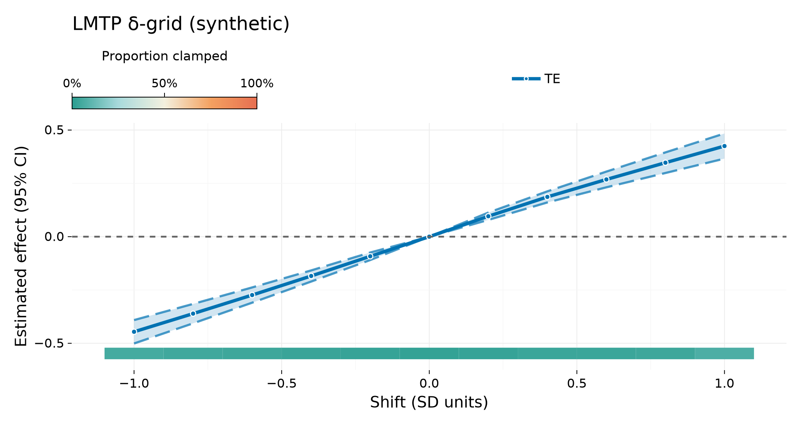
Further detail: Methods — LMTP · Small-n checklist.
2. Typed plan (execute_estimand)
When you already hold an IdentificationResult, plan_mtp / execute_estimand keep the certificate on the estimation path:
using CausalTargeted, CausalDynamics, Graphs, StableRNGs
g = DiGraph(3)
add_edge!(g, 1, 2); add_edge!(g, 1, 3); add_edge!(g, 2, 3)
id = identify(g, TotalEffectQuery(:A, :Y); node_names = Dict(1 => :W, 2 => :A, 3 => :Y))
df, _ = simulate_linear_mtp(180; rng = StableRNG(5))
estimand = estimand_from_query(TotalEffectQuery(:A, :Y), [:W])
plan = plan_mtp(estimand, df; id_result = id, deltas = [0.5], folds = 2)
grid = execute_estimand(
plan.estimand, df;
id_result = id,
deltas = [0.5],
folds = 2,
parallel = false,
rng = StableRNG(6),
)
only(grid.est), plan.certificate.result.strategy(0.2279909888250086, :backdoor)Graph (identification).
using DAGMakie, CairoMakie
fig, _, _ = dagplot_confounding(["W", "A", "Y"];
color_by = :adjustment,
exposure = 2,
outcome = 3,
adjustment = Set([1]),
title = "Good control W (identification)",
)
fig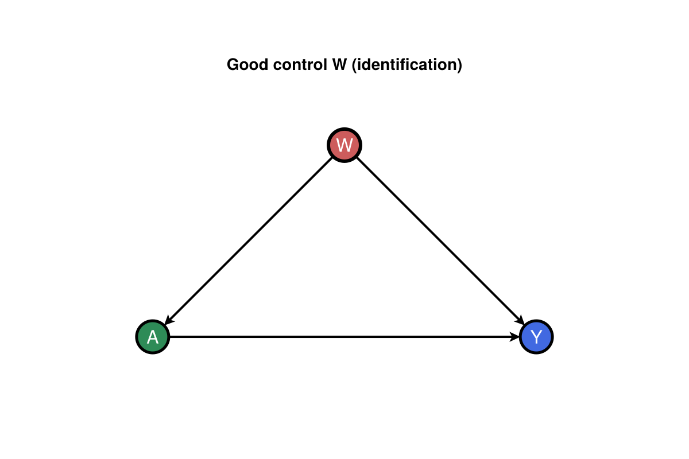
Graph (total effect).
using Graphs: edges, src, dst
te = only(grid.est)
g_te, _ = chain_graph(["A", "Y"])
fig, _, _ = dagplot_chain(["A", "Y"];
elabels = structural_edge_labels(g_te, ["TE\n$(round(te; digits = 2))"]),
elabels_fontsize = 13,
elabels_distance = 14,
elabels_rotation = 0,
title = "Typed plan TE (δ = 0.5)",
)
fig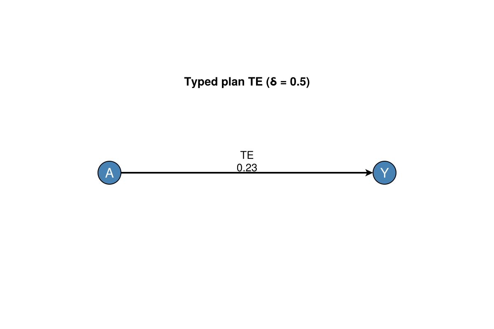
3. Interventional mediation (CausalMediation)
Mediation TE / NDE / NIE under MTP shifts lives in CausalMediation.jl. CausalTargeted supplies nuisances and optional façades once the weak dependency is loaded.
using CausalMediation, CausalTargeted, CausalDynamics, Graphs, StableRNGs
g = DiGraph(4)
add_edge!(g, 1, 2); add_edge!(g, 1, 3); add_edge!(g, 1, 4)
add_edge!(g, 2, 3); add_edge!(g, 2, 4); add_edge!(g, 3, 4)
names = Dict(1 => :W, 2 => :A, 3 => :M, 4 => :Y)
id = identify(
g, MediationQuery(:A, :Y, [:M]; effect_kind = :interventional);
node_names = names,
)
spec = spec_from_identification(id)
df, _ = simulate_continuous_mtp_mediation(200; rng = StableRNG(7))
res = run_mediation(
spec, df;
deltas = [0.5],
folds = 2,
n_mc = 16,
estimator = :onestep,
learners = DEFAULT_SL_LEARNERS,
parallel = false,
rng = StableRNG(8),
)
d = decompose(res)
d(te = 0.2958679286261231, nde = 0.10323957467960759, nie = 0.19262835394651542)Graph (identification). Full mediation DAG; adjust W only (M is a mediator, not a good control).
using DAGMakie, CairoMakie
g_id = DiGraph(4)
add_edge!(g_id, 1, 2); add_edge!(g_id, 1, 3); add_edge!(g_id, 1, 4)
add_edge!(g_id, 2, 3); add_edge!(g_id, 2, 4); add_edge!(g_id, 3, 4)
layout_id = [
Point2f(0.0, 0.0), Point2f(1.2, 0.0), Point2f(2.4, 1.0), Point2f(3.6, 0.0),
]
fig, _, _ = dagplot(g_id;
layout = layout_id,
labels = ["W", "A", "M", "Y"],
color_by = :adjustment,
exposure = 2,
outcome = 4,
adjustment = Set([1]),
edge_routing = Dict(
(1, 4) => CurvedEdge(bow = 0.18, side = :right),
(1, 3) => CurvedEdge(bow = 0.12),
),
title = "Good control W (mediation DAG)",
)
fig
Graph (mediation paths). Direct and indirect routes with W omitted (already adjusted).
fig, _, _ = dagplot_mediation(["A", "M", "Y"];
title = "Mediation paths (A → M → Y, A → Y)",
)
fig
Graph (NDE / NIE). Direct effect on A → Y, indirect via A → M (δ = 0.5).
using Graphs: edges, src, dst
g_med, _ = mediation_graph(["A", "M", "Y"])
elookup = Dict(
(1, 3) => "NDE\n$(round(d.nde; digits = 2))",
(1, 2) => "NIE\n$(round(d.nie; digits = 2))",
)
fig, _, _ = dagplot_mediation(["A", "M", "Y"];
elabels = structural_edge_labels(g_med, [
get(elookup, (src(e), dst(e)), "") for e in edges(g_med)
]),
elabels_fontsize = 13,
elabels_distance = 14,
elabels_rotation = 0,
title = "Interventional mediation (δ = 0.5)",
)
fig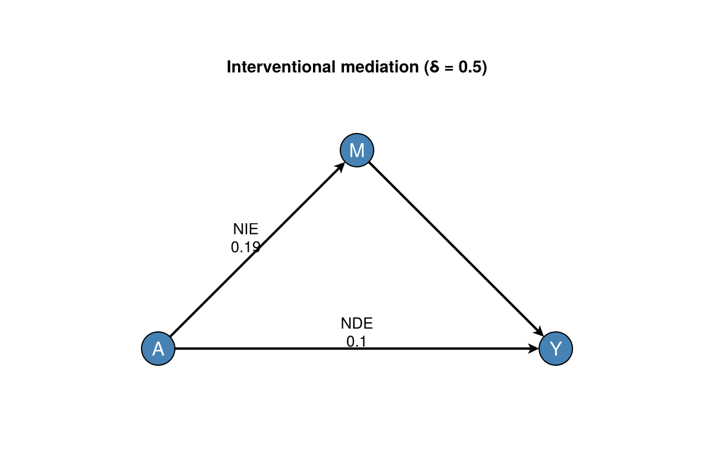
More mediation patterns (factor A, moc, nested MC): CausalMediation Getting started.
4. Sequential LMTP
Two time points with a time-varying covariate (L1 between A1 and A2):
using CausalTargeted, CausalDynamics, StableRNGs, DataFrames
rng = StableRNG(9)
n = 80
W = randn(rng, n)
A1 = 0.5 .* W .+ randn(rng, n)
L1 = 0.3 .* A1 .+ randn(rng, n)
A2 = 0.4 .* L1 .+ 0.2 .* W .+ randn(rng, n)
Y = 0.5 .* A2 .+ 0.3 .* A1 .+ 0.2 .* W .+ randn(rng, n)
df = DataFrame(W = W, A1 = A1, L1 = L1, A2 = A2, Y = Y)
res = run_sequential_lmtp(
df, [:A1, :A2], :Y;
baseline = [:W],
time_vary = [Symbol[], [:L1]],
delta = 0.5,
folds = 2,
learners = SMALL_N_SL_LEARNERS,
rng = rng,
)
res.estimate, res.times(0.5051842179120773, 2)With a temporal DAG in CausalDynamics, attach a certificate before estimating:
using CausalDynamics: TemporalDAGSpec, LaggedEdge, unroll_temporal_dag, TemporalEffectQuery
spec = TemporalDAGSpec([:w, :a, :l, :y], [
LaggedEdge(:w, :a, 0),
LaggedEdge(:a, :l, 0),
LaggedEdge(:l, :a, 1),
LaggedEdge(:a, :y, 0),
LaggedEdge(:a, :y, 1), # A₁ → Y (matches synthetic DGP)
LaggedEdge(:w, :y, 0),
])
u = unroll_temporal_dag(spec, 2)
tq = TemporalEffectQuery(:a, :y, 1, 2)
cert = sequential_identification_certificate(u, tq)
cert.result.strategy, cert.temporal_lags(:temporal_backdoor, (treat_lag = 1, outcome_lag = 2))Graph (identification). Two-period unrolling; w[1] is the good control (baseline W).
using DAGMakie, CairoMakie
using CausalDynamics: temporal_node
w1 = temporal_node(u, :w, 1)
a2 = temporal_node(u, :a, 2)
y2 = temporal_node(u, :y, 2)
fig, _, _ = dagplot_temporal(u;
dx = 2.4,
dy = 1.7,
figure_size = (720, 420),
color_by = :adjustment,
exposure = a2,
outcome = y2,
adjustment = Set([w1]),
title = "Good control w[1] (identification)",
)
fig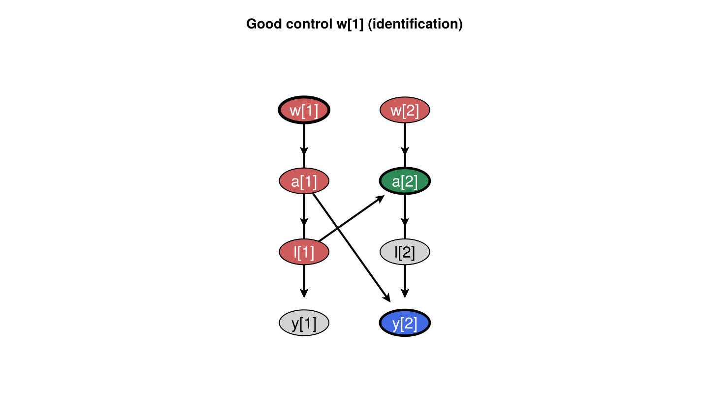
Graph (total effect). Estimand path for terminal Y (confounder omitted); LMTP shifts both A₁ and A₂.
using Graphs: edges, src, dst
g_te = DiGraph(4)
add_edge!(g_te, 1, 2) # A₁ → L₁
add_edge!(g_te, 2, 3) # L₁ → A₂
add_edge!(g_te, 1, 4) # A₁ → Y
add_edge!(g_te, 3, 4) # A₂ → Y
layout = [Point2f(0, 0), Point2f(1.1, 0), Point2f(2.2, 0), Point2f(2.2, -1.3)]
te_lbl = "TE\n$(round(res.estimate; digits = 2))"
elookup = Dict((3, 4) => te_lbl)
fig, _, _ = dagplot(g_te;
layout = layout,
labels = ["A₁", "L₁", "A₂", "Y"],
edge_routing = Dict((1, 4) => CurvedEdge(bow = 0.16, side = :left)),
elabels = structural_edge_labels(g_te, [
get(elookup, (src(e), dst(e)), "") for e in edges(g_te)
]),
elabels_fontsize = 13,
elabels_distance = 14,
elabels_rotation = 0,
title = "Sequential LMTP (δ = 0.5 on A₁, A₂)",
)
fig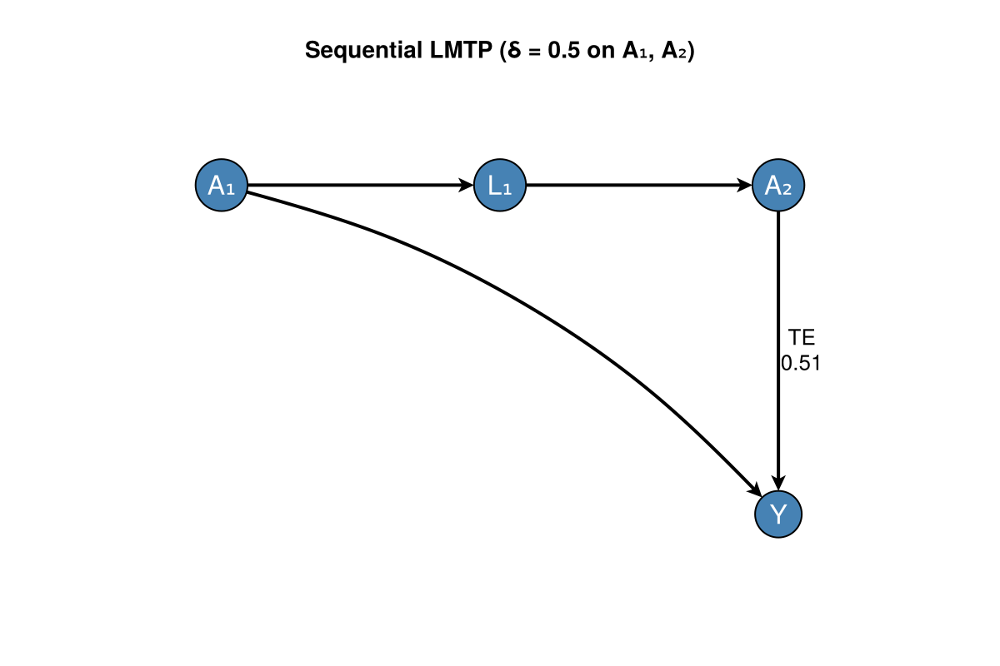
5. Missing outcome (Observable policies)
Structural missingness claims live in CausalDynamics; estimators consume Observable policies via handle_missing:
using CausalTargeted, StableRNGs
df, _ = CausalTargeted.simulate_missing_outcome_mtp(200; rng = StableRNG(10))
grid_drop = run_lmtp_grid(
df, :A, :Y;
baseline = [:W], deltas = [0.5],
folds = 2, parallel = false,
handle_missing = :drop,
rng = StableRNG(11),
)
grid_ipcw = run_lmtp_grid(
df, :A, :Y;
baseline = [:W], deltas = [0.5],
folds = 2, parallel = false,
handle_missing = :ipcw,
rng = StableRNG(11),
)
(
drop = only(grid_drop.est),
ipcw = only(grid_ipcw.est),
strategy_drop = missingness_metadata(grid_drop).strategy,
strategy_ipcw = missingness_metadata(grid_ipcw).strategy,
)(drop = 0.25035201169687854, ipcw = 0.24811216268151715, strategy_drop = :drop, strategy_ipcw = :ipcw)Graph (identification). Good-control triangle (same backdoor pattern as §1).
using DAGMakie, CairoMakie
fig, _, _ = dagplot_confounding(["W", "A", "Y"];
color_by = :adjustment,
exposure = 2,
outcome = 3,
adjustment = Set([1]),
title = "MAR outcome — good control W",
)
fig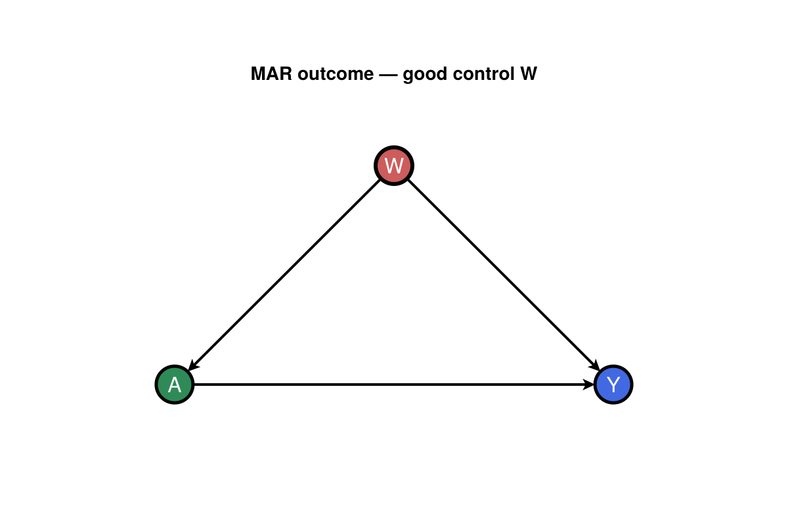
Graph (total effect). IPCW TE at δ = 0.5 on A → Y.
using Graphs: edges, src, dst
te = only(grid_ipcw.est)
g_te, _ = chain_graph(["A", "Y"])
fig, _, _ = dagplot_chain(["A", "Y"];
elabels = structural_edge_labels(g_te, ["TE\n$(round(te; digits = 2))"]),
elabels_fontsize = 13,
elabels_distance = 14,
elabels_rotation = 0,
title = "IPCW TE (δ = 0.5)",
)
fig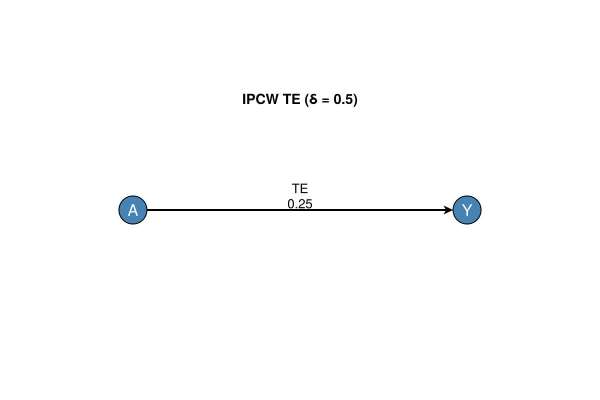
Under MAR $Y$, :drop and :ipcw need not coincide. See Missingness.
6. Positivity and sensitivity audit
Before interpreting a δ-curve, inspect positivity and optional omitted-confounder sensitivity:
using CausalTargeted, StableRNGs
df, _ = simulate_linear_mtp(200; rng = StableRNG(12))
δ = collect(-1.0:0.25:1.0)
grid = run_lmtp_grid(
df, :A, :Y;
baseline = [:W], deltas = δ,
folds = 2, parallel = false, positivity = true, rng = StableRNG(13),
)
te = grid.est[1]
se = grid.se[1]
rep = positivity_report(df, :A; deltas = grid.delta)
sens = sensitivity_report(te, se; n = size(df, 1))
(
n_weak = count(==("weak_support"), string.(rep.support_status)),
n_sens_rows = size(sens, 1),
n_delta = size(grid, 1),
)(n_weak = 0, n_sens_rows = 4, n_delta = 9)Graph (identification).
using DAGMakie, CairoMakie
fig, _, _ = dagplot_confounding(["W", "A", "Y"];
color_by = :adjustment,
exposure = 2,
outcome = 3,
adjustment = Set([1]),
title = "Positivity audit — good control W",
)
fig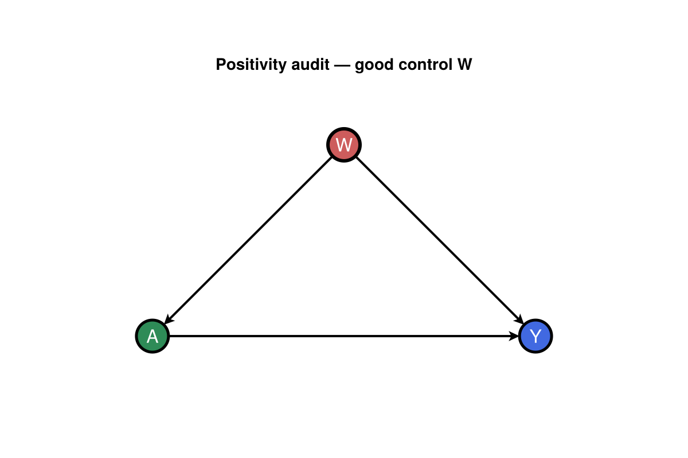
Graph (total effect). TE at the first δ in the audit grid.
using Graphs: edges, src, dst
δ₀ = grid.delta[1]
g_te, _ = chain_graph(["A", "Y"])
fig, _, _ = dagplot_chain(["A", "Y"];
elabels = structural_edge_labels(g_te, ["TE\n$(round(te; digits = 2))"]),
elabels_fontsize = 13,
elabels_distance = 14,
elabels_rotation = 0,
title = "TE at δ = $(round(δ₀; digits = 2))",
)
fig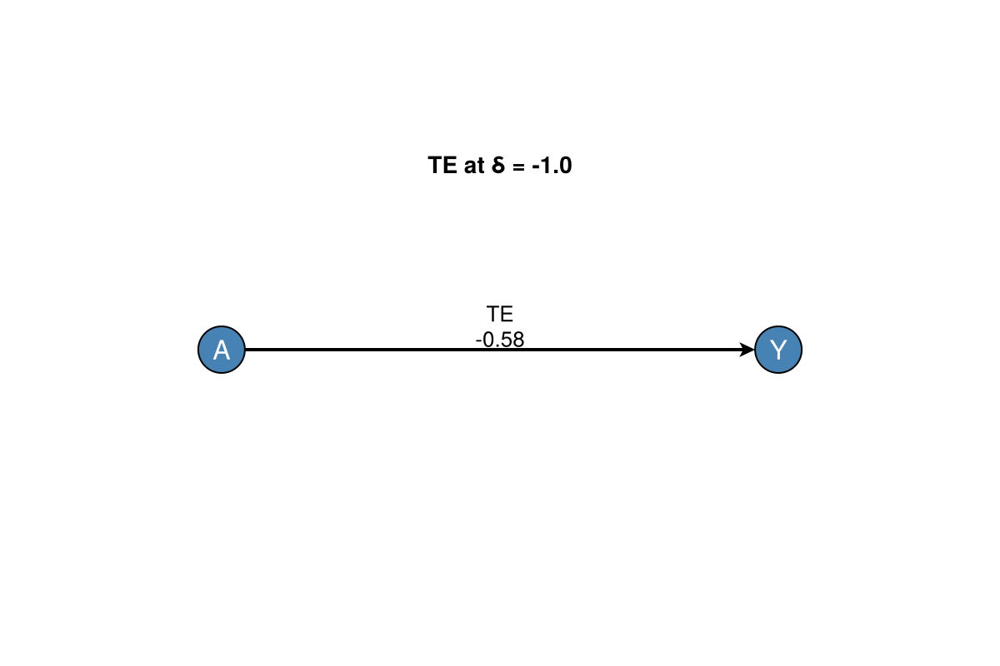
7. G-computation plug-in (comparison)
When you want a plug-in contrast rather than the LMTP EIF path:
using CausalTargeted, StableRNGs
df, truth = simulate_linear_mtp(200; rng = StableRNG(14))
res = run_gcomp(
df, :A, :Y;
covariates = [:W],
folds = 2,
learners = (:glm, :mean),
rng = StableRNG(15),
)
res.estimate, res.se(0.7288871408723244, 0.08411773208194762)Graph (identification).
using DAGMakie, CairoMakie
fig, _, _ = dagplot_confounding(["W", "A", "Y"];
color_by = :adjustment,
exposure = 2,
outcome = 3,
adjustment = Set([1]),
title = "G-computation — good control W",
)
fig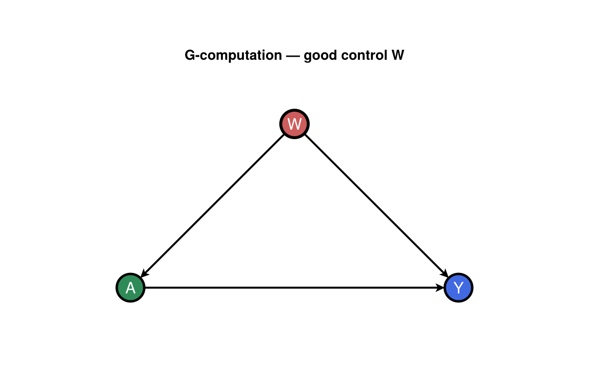
Graph (total effect). Plug-in contrast on A → Y.
using Graphs: edges, src, dst
g_te, _ = chain_graph(["A", "Y"])
fig, _, _ = dagplot_chain(["A", "Y"];
elabels = structural_edge_labels(g_te, ["TE\n$(round(res.estimate; digits = 2))"]),
elabels_fontsize = 13,
elabels_distance = 14,
elabels_rotation = 0,
title = "G-computation TE",
)
fig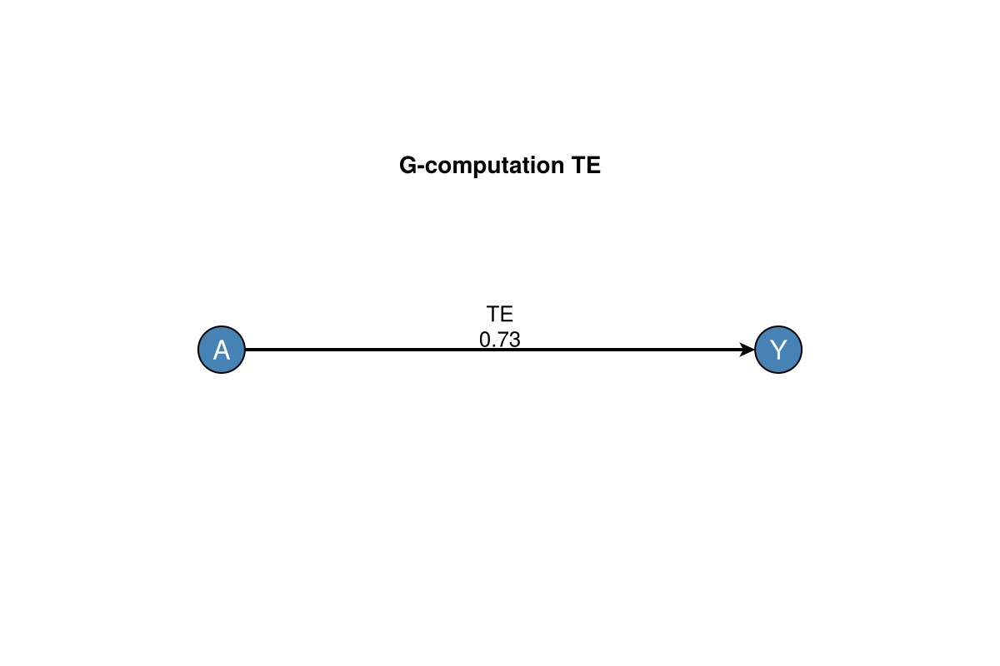
Next steps
| Topic | Page |
|---|---|
| Literature ↔ API map | Methods and literature |
| Missingness strata and certificates | Missingness |
| Conservation / ecology defaults | Small-n checklist |
| Real and semi-synthetic cohorts | Stress validation |
| Symbol index | API overview |
| Narrative book | CDCS |